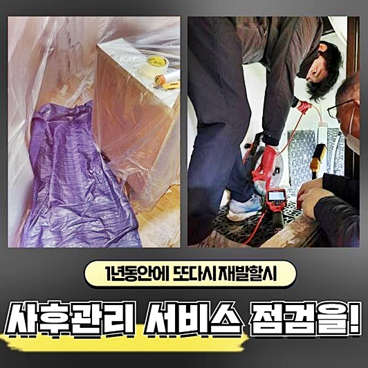
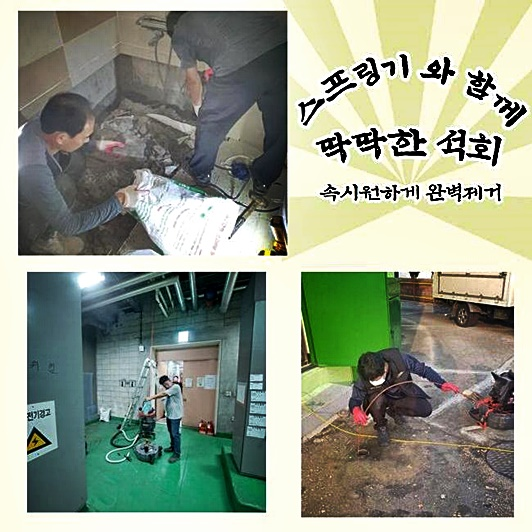
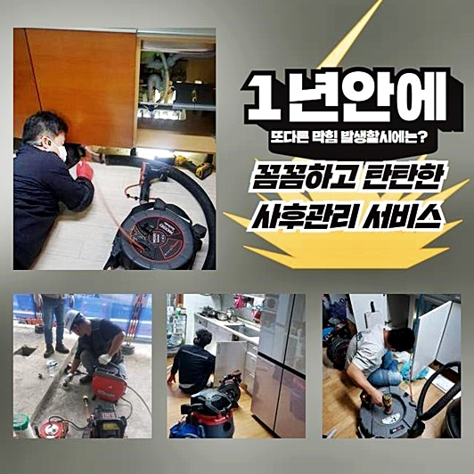
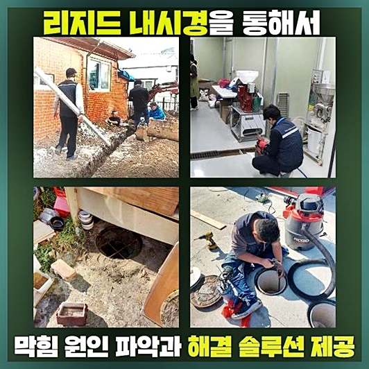
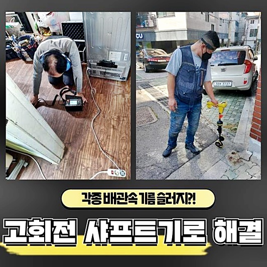
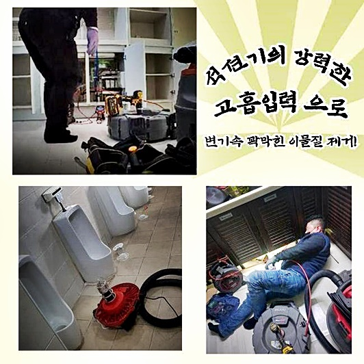
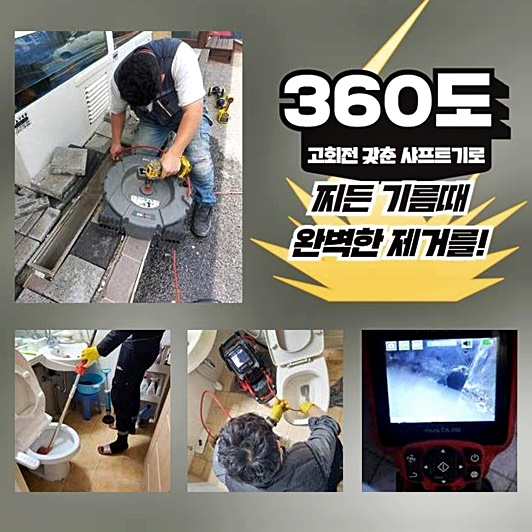

🏠 군포동세탁실뚫음 광정동 하수관고압세척 수리업체
용인시 처인구 고압세척 전문 시공 후기

📋 작업 개요
- 위치: 용인시 처인구, 수원시 영통구, 화성시 동탄
- 서비스 유형: 고압세척, 내시경점검
- 작업 일시:
- 업체명: 하수구수사대 (010-5615-2118)
🔍 문제 상황
군포동세탁실뚫음 광정동 하수관고압세척 수리업체
배수관이 있는 베란다쪽 생활 중에 상하수도들을 사용하시는 곳이면 어느곳이나 있는 배수로!
배수관이 막히게 될 시 생활양식 측면의 악영향들이 참으로 많이 양산될거에요
화장실의 경우 보통 떨어진 머리카락이라던가 잔해물이 군데군데 누적되며 발생됩니다
또한 욕실배관 이라면 흐름이 진행될수가 없어 사면초가일 때가 많습니다
금일엔 막혔던 사례를 말씀드리면서 해당 문제에서는 어떤 대처를 해야되는지 말씀드릴게요
먼저 가정에서 통수불능의 결함이 생겨나버리면 간단하게 해결하지 못하는 사안이므로 전문적인 접근을 통하여 바로 잡는것이 중요합니다
배수구로 흐르지않거나 역류되어버리는 증세로 막혀버렸다는걸 인지할 수 있어요
문제 발생 시에 허둥지둥 대기보단 신중히 해결해야하는데 신경을 쓰지못해 별다른 해결에 힘쓰지 않으시면 냄새가 난다거나 하는 불편이 발현될 수 있기에 조속하게 조치해주시는게 좋아요
의뢰인분도 문제들을 목격하시고 통수불가를 인지하셔서 서둘러서 저희에게 도움을 청하셨기에 재빨리 작업에 착수할 수 있었어요
내방하고서 진찰을 시작했죠 첫째로 배수로를 관찰했어요
입구부분에서 하수들이 잔존하는걸 목격했고 배수과정도 느린속도로 빠지는걸 알수있었어요

🔎 원인 분석
💡 전문가 진단: 정밀 진단 장비를 사용하여 슬러지의 고착 여부를 판명하고 타격/세척 작업을 실시했습니다.
의뢰자도 아마도 입구쪽에 잔해물이 누적되어 막힌거라 생각하고 보이는 곳부터 청소해보셨대요
그럼에도 불구하고 배수자체가 제자리였고 배수관 제품들을 이용해주어도 증세가 누그러지지않아서 저희 전문가들을 부르게 된것이라 말씀하셨죠
막히게된 지점을 세척하려면 무엇이 문제인지 아는것이 중요한데요
양상이 가볍거나 약간의 머리카락들처럼 잔여물이 배수관에 끼어서 막혀버리면 마트 등에서 살 수 있는 하수관뚫는데에 최적화된 제품들을 이용해서 간소하게 해결가능한 사례도 존재합니다
반대로 하수도에 유분성분과 석회들이 침전되어 발발한 증상이라면 기기를 가용해주어 일련의 과정을 해주는게 옳은 방식이에요
우선 석션을 이용하여 오수들을 흡입했어요
석션의 경우 공기압을 이용하여 잔해들을 흡입시키는 장비로서 고객님들이 알고계시는 청소장치와 유사하다고 볼 수 있어요
그럼에도 불구하고 오수들만 빠지게되고 제거되어야 할 이물들은 그대로여서 첫번째로 하수만 제거해주고 내측을 들여다보아야 했어요
내시경장비를 이용했는데요
넣어주니 초입에서도 굳어진 대량의 석회성분들이 모습을 드러냈죠
석회성분은 군데군데 포함되어있는 칼슘등등이 반응들을 일으키게되면서 발생되는 이물의 한가지인데요
하수관에 잔존해있던 구축물일 경우 건축물 구조상 심층부로 이렇게 석회 잔해가 쌓이게되요
오늘도 동일하게 석회들로 인해 통수공간이 확보되질 못하고 물빠짐이 불가했던 상태였는데 이런 문제에선 장비사용과 더불어 화학반응을 일으키는 제품을 이용해줘야 되겠습니다

🔧 작업 과정
약품의 경우 흔히 발포제기능을 담당하는 클린용품을 생각하게되는 고객분이 대다수인데요
주변에서 구매가능한 제품만으론 제대로 제거시킬 수는 없어요
중화제 화학제품을 이용해주어야 해요
또한 석회물질도 기름기들과 동일하게 오래될수록 딱딱해지게되는 특성들이 있죠
그러므로 해결에 이렇다 할 조치가 없다면 막힌다거나 물이 새는 증상들도 심화되게 되요
이곳에서도 딱딱해진 석회들로 통수가 안되는 곳이여서 제대로 된 해결들을 돕기위해 유화약품을 사용하기에 이르렀습니다
오수들은 석션 각 작업들을 통해 흡입시키고 전용 약품들을 투입시켜 석회이물질을 부드럽게하는 각 작업들을 시작했는데요
이렇게 유화약품을 운용한 다음 굳어진 이물을 흐물거리게하는 수순을 밟아나가 오차없이 벽측까지 청소하는것이죠
이렇게 석회이물을 녹였다면 이후에 플렉스 샤프트를 이욯하여 벽쪽에 붙어있는 이물들도 세척해요
하수가 이동하는 배수관에 침전된 이물은 샤프트 장비를 이욯하여 깨끗히 시공을 실시해줘야 욕실공간을 쓰시며 머리카락등이나 다른 이물이 흡착되지 않고 출수부로 수월하게 배출됩니다
배수관에 존재하던 동시에 석회들도 재발여지 없이 제거가능합니다
제거된 잔재들은 심층부로 안들어가게끔 처음에 흡입시켰던 석션도구로 흡입 수리를 진행해요
그렇다면 이물은 석션장비와 결합된 통쪽으로 이물과 석회들이 담기므로 내측에 남아있질않죠
최종적으로 꼼꼼하게 마무리해주는 작업입니다
스케일링 수리를 가용해주어 꼼꼼하게 세척들을 끝냈습니다
석회이물질은 수도를 이용하는 장소일 때 장소불문하고 발생되게됩니다
이와 같은 상황으로 인해 하수관을 관리하고 선제적으로 예방적 관리를 실시하는게 1순위인걸 기억해주길 부탁드려요
세척이 끝났으면 배수가 원만한지 체크를 수행했어요
다행스럽게도 하수들이 시원하게 흘러가는걸 보았습니다
의뢰자도 피해들이 깨끗히 풀리니 끝내 저희의 배관 해결사들에게 고맙다고 하시어 저희들도 만족감을 느끼면서 철수했어요


✅ 작업 완료
이와같이 원활한 물사용과 함께 중요시 되는건 위생에 문제가 없는 환경이라고 할 수 있죠
지속적인 강조를 통해도 부족할정도로 번거로울지언정 때때로 관리하시면 문제없이 일상을 유지시킬 수 있습니다
마찬가지로 유사한 문제가 불거지면 무문별한 방법을 통하기보단, 금일 정보를 보시고서 깨끗하게 욕실공간을 유지하시기를 바라요!
한시간안으로 어디로든 찾아뵙고 있으니 주저없이 의뢰하시면 신속하게 찾아뵙겠습니다
막히는 문제들! 내버려두지말고 저희 전문진과 헤쳐나가보세요!




⚠️ 하수구 배관 막힘 예방 및 관리 가이드
- ✅ 머리카락, 비닐, 물티슈 등 물에 분해되지 않는 이물질은 절대 흘려보내지 마세요.
- ✅ 기름기 많은 식기는 설거지 전 키친타올로 먼저 기름때를 닦아내세요.
- ✅ 주기적으로 배수구에 뜨거운 물을 가득 부어주어 유지방 고착을 방지하세요.
- ✅ 작업 후 1년 이내 재발 시 무상 A/S 보증 서비스를 제공합니다.
💡 핵심 정리
- 확실한 장비 작업(내시경 점검 및 샤프트 스케일링)으로 원인을 뿌리 뽑습니다.
- 작업 후 1년 이내에 동일한 부위 재발 시 100% 무상 A/S 서비스를 보장합니다.
- 서울 · 경기 · 인천 전 지역에 24시간 언제든 긴급 출동할 수 있도록 항시 대기 중입니다.
❓ 자주 묻는 질문 (FAQ)
🚨 용인시 처인구 고압세척 문제로 고민이신가요?
정확한 원인 진단과 확실한 시공으로 재발 없는 해결을 약속드립니다.
24시간 긴급 출동 | 서울 · 경기 · 인천 전지역 | 1년 내 재발 시 무상 A/S